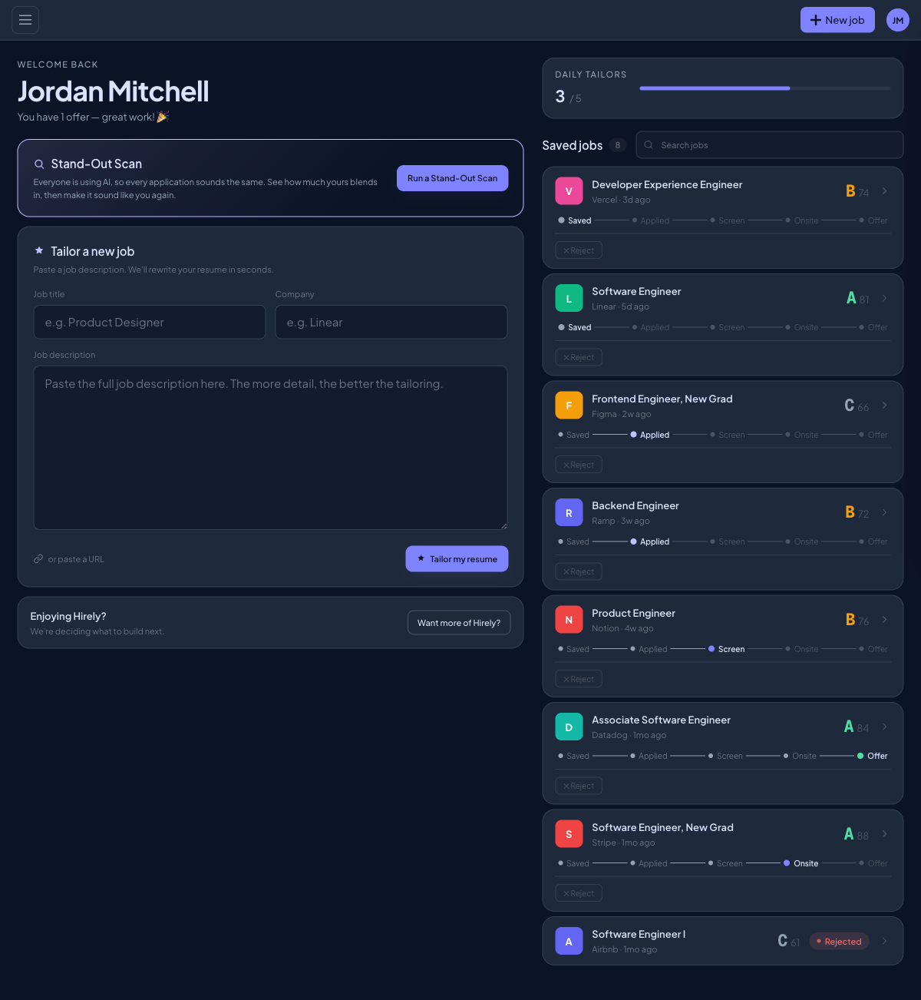
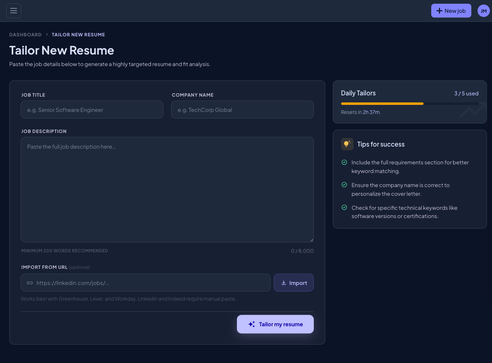
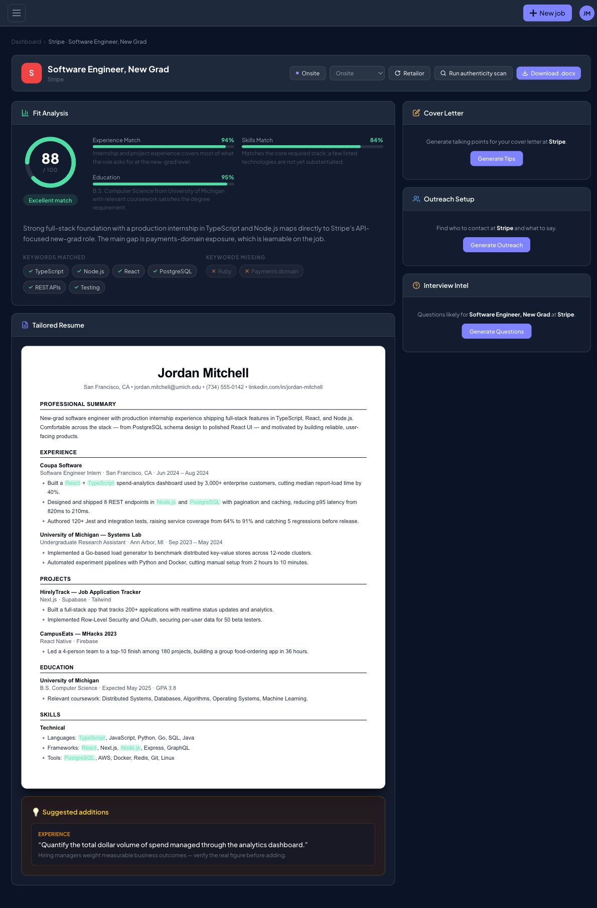
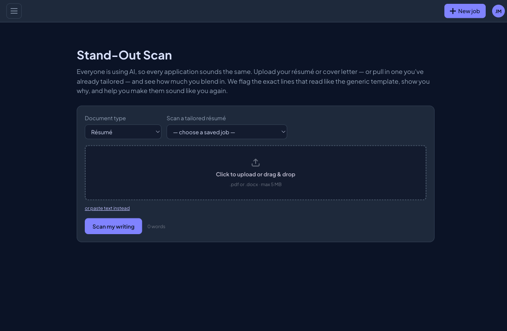
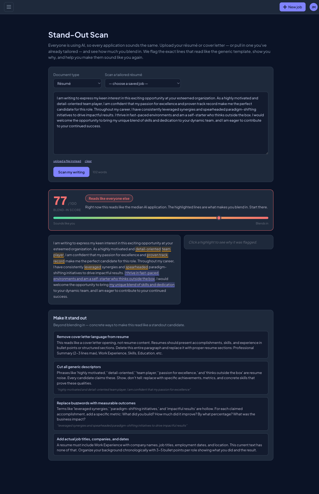
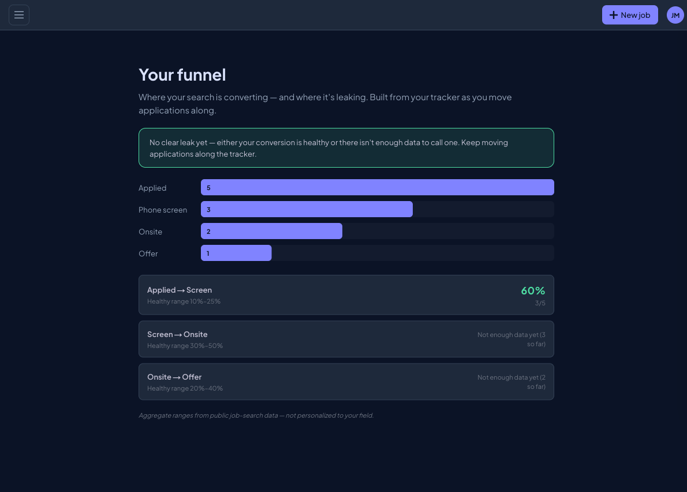
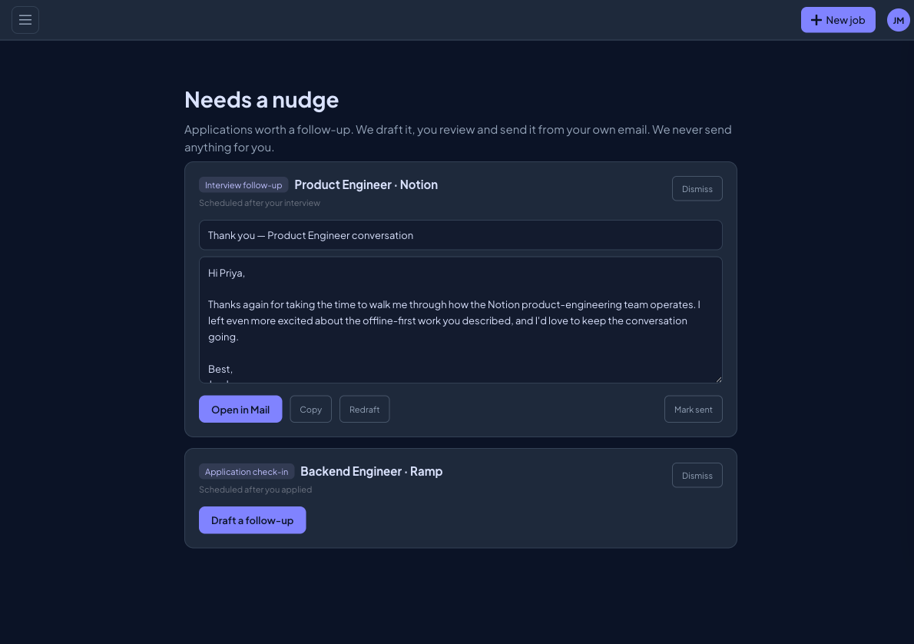
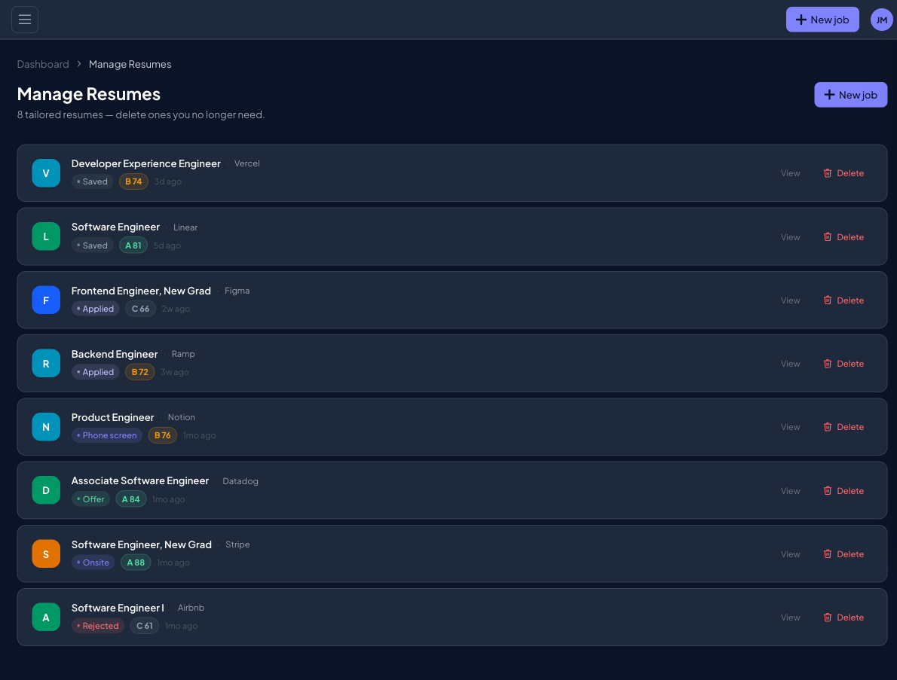
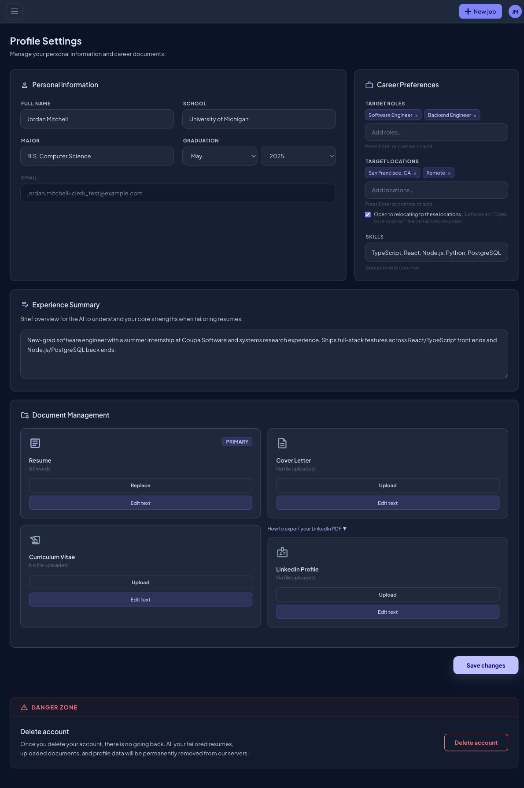

Hirely
A tool that turns your real resume plus a job description into a tailored resume for that specific role — built on a hard anti-fabrication rule: real experience in, tailored output out, nothing invented.
The problem
Qualified candidates don't get seen by recruiters. Job-seekers are told to tailor their resume to every role so it actually surfaces, but doing it well is slow and most don't. The tools that promise to automate it have a trust problem: many inflate or invent experience to match the job description, and increasingly resumes get flagged as AI-written — which can sink a candidate before a human ever reads it.
So applicants are stuck between two bad options: spend hours manually rewriting, or use a generator that risks fabricating their history and sounding robotic.
The insight & the wedge
The opportunity wasn't "another resume generator" — it was trust. Hirely's wedge is anti-fabrication: it only reframes and surfaces experience the person actually has, tuned to the specific job, and keeps the writing sounding human so it doesn't get flagged.
This single constraint became the product's identity and the through-line for every decision — from how the output is generated to how we talk about it in marketing.
What I built
As founder I work across product and growth. Hirely grew from a single tailoring tool into a full job-search workspace — I architected and deployed the entire full-stack MVP myself, using Claude Code to accelerate development. The product today:
- Resume tailoring + Fit Analysis — paste a job description and Hirely rewrites your real resume for that role in seconds, then scores the fit (an overall match score with experience, skills, and education breakdowns) and shows exactly which keywords matched and which are missing.
- Stand-Out Scan — the wedge feature. It rates how much your resume or cover letter "blends in" with generic AI writing, highlights the exact lines that read like the median application, and rewrites them to sound like you. This is the anti-fabrication, human-sounding principle made tangible.
- Application tracker & funnel analytics — a saved-jobs pipeline (Saved → Applied → Screen → Onsite → Offer) with per-application grades, plus a funnel view that flags where a user's search is converting or leaking against healthy benchmark ranges.
- "Needs a nudge" follow-ups — drafts interview thank-yous and check-ins for the user to review and send from their own email. Consistent with the brand: we draft it, you send it — we never send anything for you.
- Cover letter tips, outreach setup & interview intel — supporting tools per job, plus an authenticity scan and one-click .docx export.
- Profile & document management — career preferences, target roles/locations, and managed resume / cover letter / CV / LinkedIn documents that feed the tailoring.
The model is freemium — a daily "Tailors" quota (5/day) gates the core action — built on:
The product
A look inside Hirely:









Hirely Marketing — the growth engine
Beyond the product, I built Hirely's growth and content system. The strategy is trust-first: earn credibility with job-seekers before ever pitching, and never let marketing make a claim the product can't back up. The same anti-fabrication and brand-voice rules that govern the product govern every post.
Reddit growth dispatch
A read-only, quiet-first system for finding frustrated job-seekers on Reddit and helping them genuinely. It scans target subreddits, scores threads on where I can actually add value, checks each subreddit's rules before drafting, and produces reply drafts I review and post by hand — with a hard ceiling of roughly one Hirely mention per ten replies. The rule that governs it: earn trust, don't extract signups.
TikTok carousel content (v2 visual pivot)
A system that studies why a viral TikTok carousel works — its hook, slide rhythm, and payoff — then rebuilds that structure with Hirely's own honest message. It produces slide-by-slide copy in Hirely's voice, captions, hashtags, and copyright-free image directions, all passing the same brand-compliance bar as everything else (no fabricated claims, no copied content).
Multi-channel voice
A consistent brand voice across LinkedIn, Reddit, and X — with explicit banned phrases, forbidden claims, and the 115% honesty framing baked in so the marketing never oversells the product.
Outcomes & early signal
Hirely is in early beta, where the goal is learning fast rather than chasing scale. The most telling number isn't reach — it's activation:
With 10 waitlist signups and 3 hands-on beta users, the early read is strong: the scan feature is the most-used part of the product, with each beta user returning to it several times. That repeat usage — and 100% activation among new signups — is the signal that Hirely solves a real, recurring need.
I work in tight agile cycles: ship, gather direct user feedback, and update the product continuously. The roadmap is set by what beta users actually do and ask for, not by guesswork.
What I learned & what's next
The biggest lesson: in a crowded "AI resume" space, a clear constraint — don't fabricate — is more defensible than another feature. It shaped the product, the funnel, and the brand voice into one coherent thing.
The second: building it myself end-to-end (Supabase, Stripe, Vercel, AI agents for distribution) means feedback turns into shipped changes in days, not sprints. The early activation data already pointed to the scan feature as the wedge — so the focus now is deepening what's clearly working rather than widening the surface area.
Roadmap (still being shaped): next priorities are converting waitlist interest into active beta usage and turning the scan feature's strong activation into retention. Happy to talk through the thinking.